Jordan 2050 AI Pipeline
The visual production bible covering the AI creative journey, virtual production studio, vision architecture, protagonist design, brand DNA, and quality assurance loop.
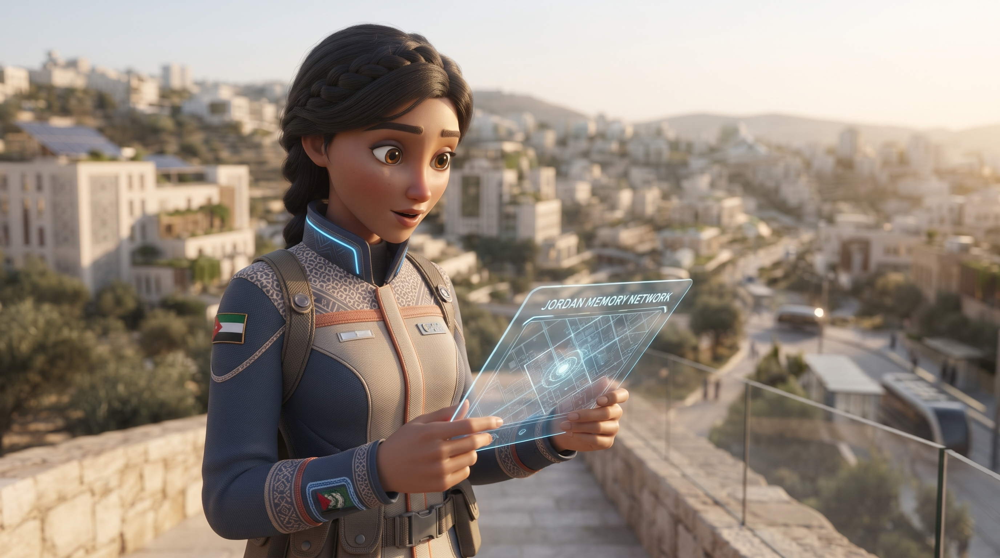
// MEET TAIMA • MEDIA LINK ESTABLISHED
// CINEMATIC GALLERY • TAIMA ARCHIVE
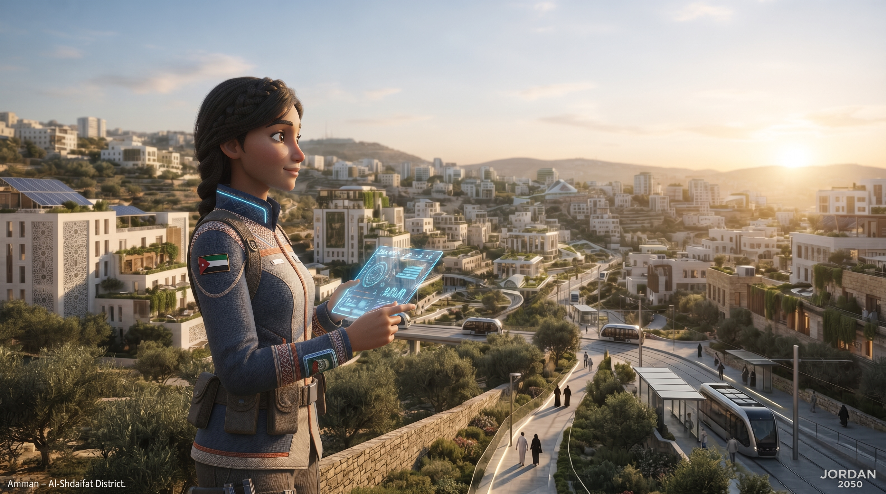
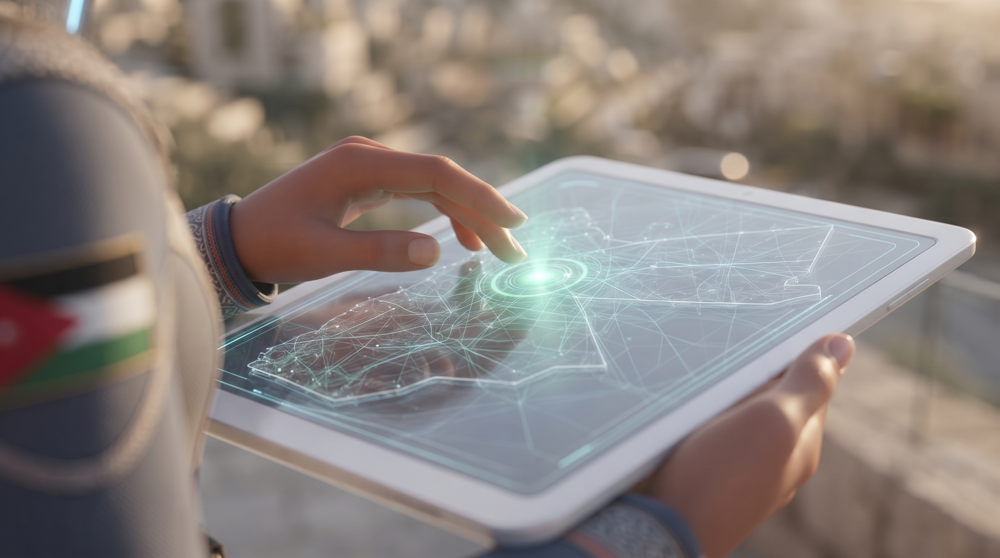
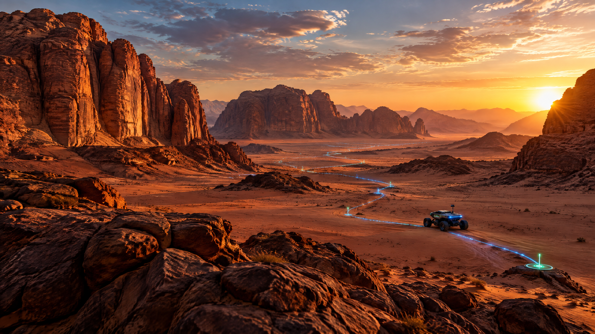
// STILL FRAMES FROM THE TAIMA DRIVE NODE
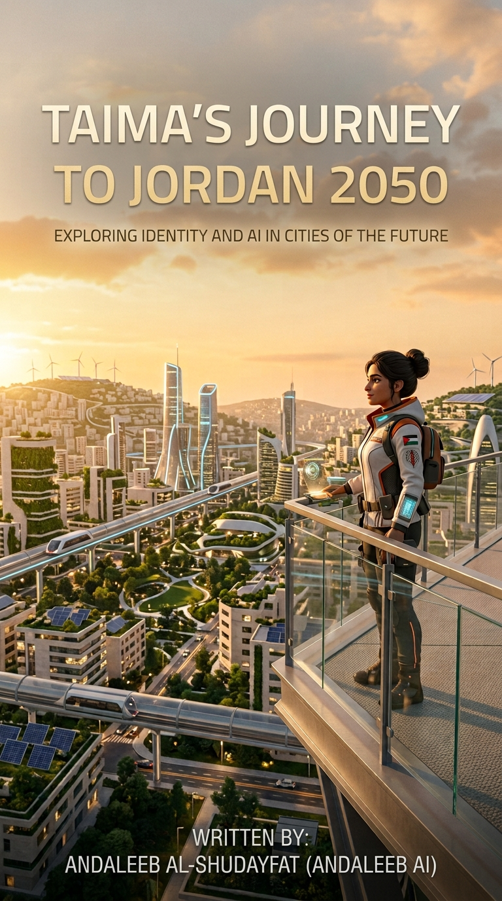
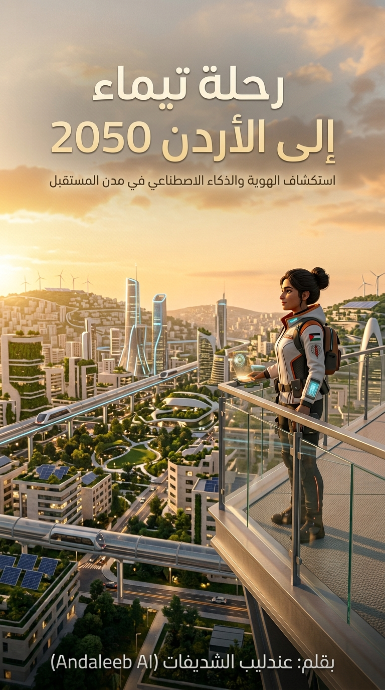
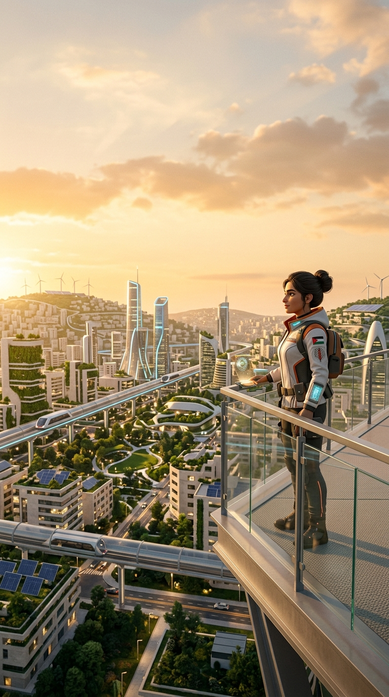
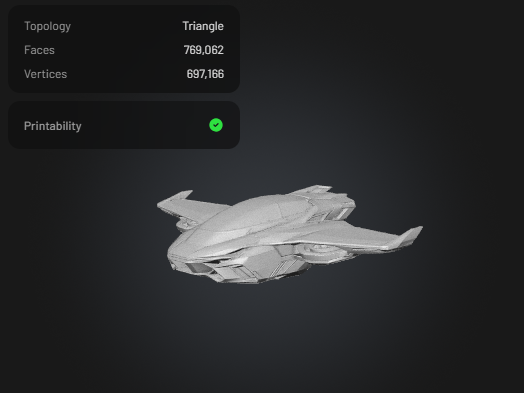
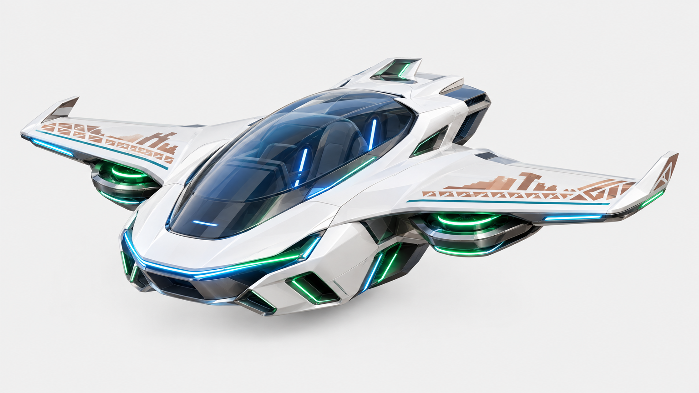
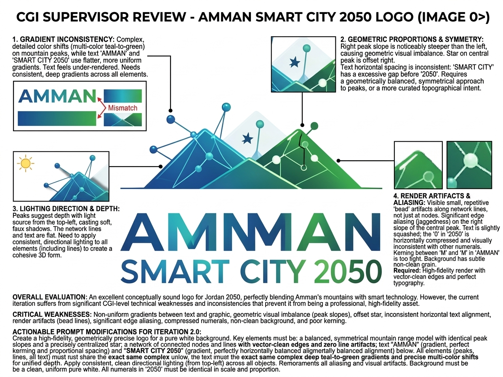
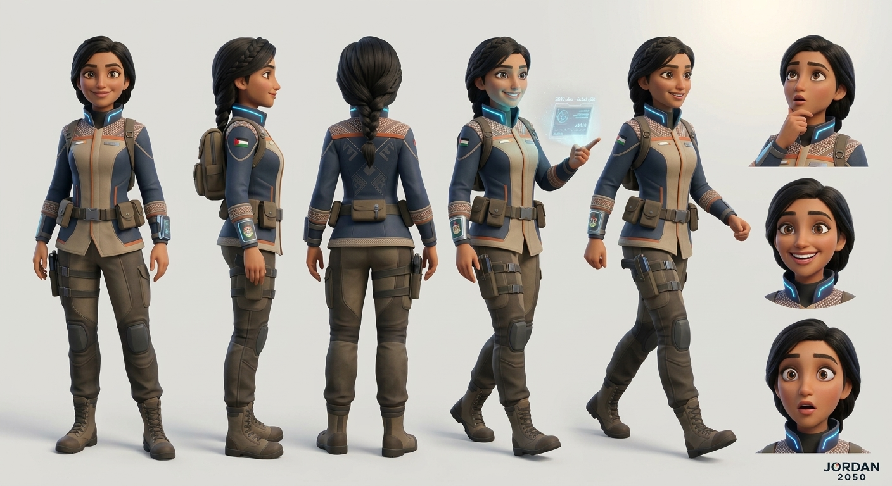
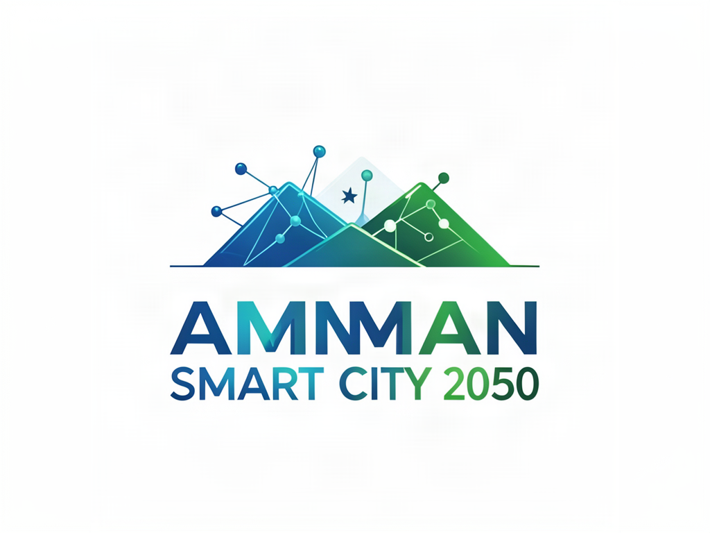
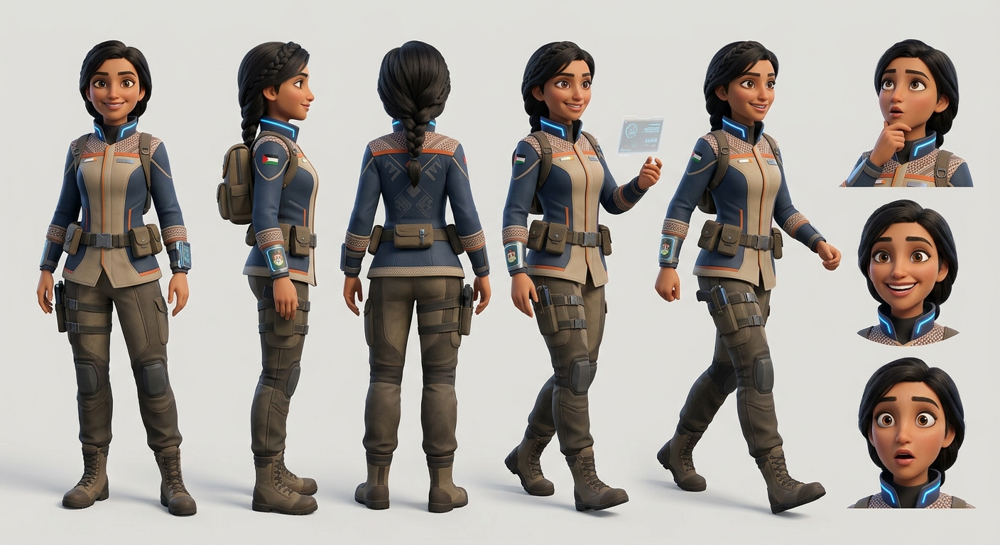
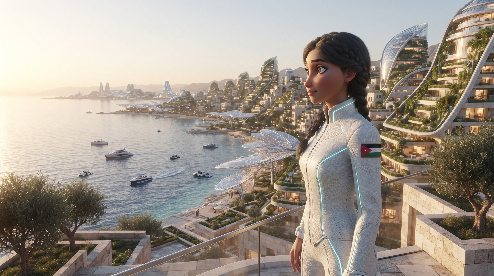
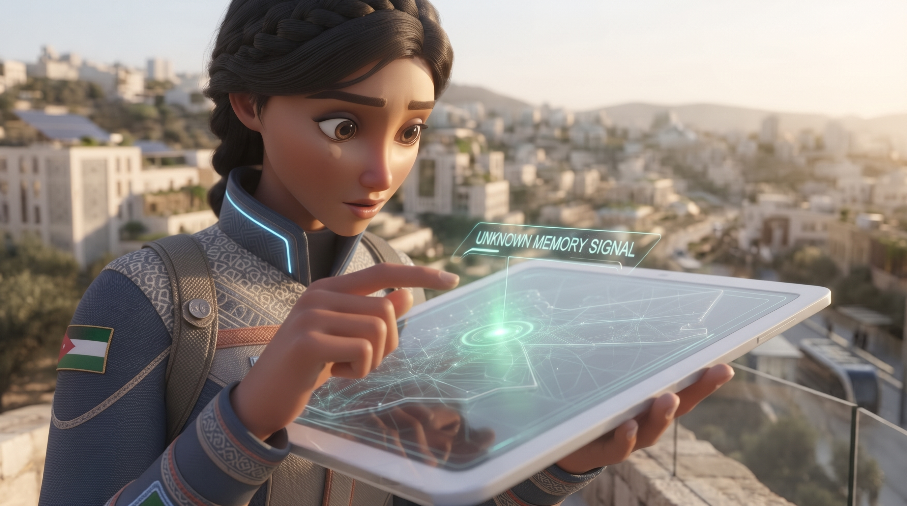
// VIDEO STREAMS RECOVERED FROM TAIMA DRIVE
// AUTONOMOUS EXPLORATION VEHICLE ASSET
// BI ANALYTICS / CONCEPT SIGNALS
Illustrative concept data created for the Jordan 2050 portfolio.
SCORE: 000459 | STATUS: ACTIVE
// NOTEBOOKLM ROOM / AUDIO LOGS
A comprehensive guide to traversing the neo-dunes of Wadi Rum, reconstructed from the recovered route plan.
Audio logs broadcasting the latest technological shifts in Amman.
Soft voice layers recovered from the Drive archive.
// INTERACTIVE EXPLORATION ROUTE • CENTER → WADI RUM
The central command layer for TAIMA’s future-facing missions, archives, and AI-assisted discoveries.
// INTERACTIVE MODEL • DRAG TO ORBIT • TERRAIN SCAN ONLINE
Orbit the autonomous explorer above the neo-dunes. The model is connected to the Wadi Rum route and responds to pointer movement, touch drag, and orbit controls.
// JORDAN 2050 PRODUCTION DOCUMENTS • DOWNLOADABLE FILES
The visual production bible covering the AI creative journey, virtual production studio, vision architecture, protagonist design, brand DNA, and quality assurance loop.
The editable presentation version for workshops, portfolio reviews, and future iterations of the Jordan 2050 world-building system.
// COMMUNITY TRANSMISSIONS • BLOG LOGS • HUMAN RESPONSE NETWORK
“The atmosphere feels like a message from Jordan’s future — cinematic, focused, and beautifully strange.”
— Noor / Amman • SIGNAL 001“The Wadi Rum sequence made the whole archive feel like a real mission briefing.”
— Sami / Aqaba • SIGNAL 002“I came for the visuals and stayed for the voice logs. Taima feels present.”
— Lina / Irbid • SIGNAL 003A field note on reading Wadi Rum as a living interface, where landscape, memory, and machine vision overlap.
Why the best technology in the archive stays quiet until people are ready to listen.
A visual diary connecting renewable energy, shared water systems, and everyday human curiosity.
// FINAL ARCHIVE CHALLENGE • CATCH THE MEMORY SIGNAL BEFORE IT FADES